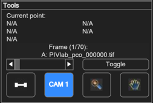
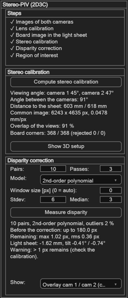

Stereo-PIV (2D3C)
With two cameras that look at the light sheet from different angles, PIVlab measures all three velocity components in the sheet: U and V in the sheet plane and W through it. Most of the work is the same as in normal 2D PIV — you only learn two new things: the camera switch and the Stereo-PIV panel.
How it works
Overview of the involved steps
- Import the images of both cameras.
- Perform a lens calibration for each camera.
- Record an image of the calibration target in the light sheet with both cameras.
- Perform the stereo calibration (calculates the positions of the cameras).
- Perform the disparity correction (accounts for the misalignment between the calibration target and the light sheet).
- Perform the PIV analysis of the images and derive the W component from the results.
Each camera sees the particles in the light sheet in perspective. After the stereo calibration, PIVlab maps the images of both cameras onto one common grid in the light sheet, so a point of the sheet lies at the same pixel in both images. Each camera is then analysed with normal 2D PIV. The two 2D results differ only because the cameras see the out-of-plane motion from different angles, and from this difference PIVlab computes U, V and W.
The board is never placed exactly in the light sheet, so the two images do not match perfectly at first. The remaining shift between them, the disparity, is measured by correlating the particle images of camera 1 with those of camera 2 at the same time. PIVlab fits a smooth map to it, corrects both cameras with it, and from it also knows where the light sheet really is.
One session, two cameras
In stereo mode PIVlab keeps two cameras in one session. All panels work on the active camera; the switch CAM 1 / CAM 2 in the Tools panel (or CTRL+K, or Image settings → Stereo-PIV: switch camera 1 / 2) changes between them. The camera that is shown is written on the image in its colour: camera 1 blue, camera 2 orange.

| Kept | What |
|---|---|
| Separate for each camera | images, lens calibration, board image in the light sheet, background images, masks, the 2D result of the camera |
| Shared by both cameras | all settings (pre-processing, background subtraction, image-based validation, PIV settings, vector validation, smoothing), region of interest, spatial calibration, results (U, V, W) |
Any setting you change while camera 1 is shown also applies to camera 2. Only the masks have to be drawn for each camera.
1. Importing the images
- In the Input data panel click Import stereo images (below Import images).
- The normal image dialog opens twice: first select the images of camera 1, then those of camera 2. Use the same sequencing style for both (e.g. pco double images).
- Both cameras must give the same number of images, recorded at the same time.
Checking the images first
Right after the import you can check the particle images with a normal 2D PIV analysis: Analyze current frame or Analyze all frames analyse the camera that is shown, as in 2D PIV. Switch to the other camera to check it too; each camera keeps its own check result. The check results are removed when you compute the stereo calibration.
2. and 3. Lens calibration and board image, for each camera
Do this exactly as in Camera calibration, once with camera 1 active and once with camera 2 active (the Camera 1 and Camera 2 menu entries switch the camera for you). The board definition is shared.
- Lens calibration (Camera calibration (undistortion)): Estimate cam parameters from board images, or Load parameters. For cameras with a Scheimpflug adapter, use the tilted sensor model. Stereo-PIV always undistorts the images, also when Enable camera calibration is not ticked.
- Board image in the light sheet (Image rectification): place the board in the light sheet, record it with both cameras, and load each camera's image with Load target image. The stereo calibration replaces the 2D rectification. After the stereo calibration, Show rectified board shows the board on the common grid of both cameras; its corners should lie at the same pixels in both cameras.
4. Stereo calibration
Steps 4 and 5 are done in the Stereo-PIV panel (Analysis → Stereo-PIV). At the top, the panel shows a checklist of what is done and what is still missing; below are the stereo calibration (the common view of both cameras) and the disparity correction (the fine alignment of both cameras on the particle images).

Click Compute stereo calibration. PIVlab detects the board corners in the board images of both cameras (obviously wrong corners are rejected), computes the position of each camera, and builds the common grid in the light sheet. Afterwards:
- Both cameras show their image on the common grid. Image points of the light sheet should lie at nearly the same pixel in both cameras.
- The spatial calibration (px → mm) is filled in from the grid. Only the time step is missing: enter it in the calibration panel and apply it. The checklist shows it as done once it is applied.
- The region of interest is set to the overlap of both views.
Show 3D setup draws both cameras, the board, the overlap and (after the disparity correction) the measured light sheet. Its report gives the viewing angle of each camera, the angle between them, the distance to the sheet, the scale (mm per pixel), the overlap of the two views and the number of board corners. A small angle between the cameras makes W noisy (its error grows like 1 / tan of the half angle).
5. Disparity correction
In the disparity correction part of the Stereo-PIV panel, click Measure disparity. PIVlab correlates frame A of camera 1 with frame A of camera 2 for several image pairs spread over the series, fits a smooth map, and corrects both cameras with it. It repeats this on the corrected images to find what remains. If you click ANALYZE! without measuring the disparity, PIVlab measures it first with the current settings.
- Only the image data inside the region of interest and outside the masks is used; the masks of camera 1 and camera 2 are combined.
- The image pre-processing of the GUI is used for the disparity too.
- A minimum-intensity background of each camera is always subtracted for the disparity (independent of your background setting), so reflections and walls do not produce wrong disparity. It needs at least 10 A images.
| Setting | Meaning |
|---|---|
| Pairs | Number of image pairs used (default 10). More pairs give a smoother, more reliable map. |
| Passes | How often the disparity is measured (default 3): each further pass measures what remains on the corrected images and adds it. It stops early when less than 0.1 px remains. |
| Model | Smooth model of the disparity map: 2nd-order polynomial (default), plane, or projective. |
| Window size | Interrogation area of the first pass in px, 0 = automatic. Unlike regular PIV, the disparity map should be calculated with very large windows for good robustness. |
| Stdev / Median | Validation of the disparity vectors (defaults 6 and 3). |
The report gives the number of rejected vectors, the disparity before the correction, what remains after it, and the position and tilt of the light sheet relative to the board. A warning appears when more than 1 px remains — then check the lens calibrations and the board images.
With Show you can look at the result while the panel is open:
| Display | Shows |
|---|---|
| Camera image | The corrected image of the active camera. |
| Disparity: measured vectors | The measured shifts between the cameras; rejected vectors are marked. |
| Disparity: fitted map | The smooth map that is used for the correction. |
| Remaining disparity | Measured minus fitted — should be small and random. |
| Overlay cam 1 / cam 2 | Camera 1 red, camera 2 cyan, with or without the correction. Large structures (walls, edges, particle clouds) should line up after the correction. Single particles only overlap (grey) in a thin light sheet: each camera sees particles at different depths of the sheet at slightly different places, and the correction removes only the mean shift. |
6. Analysis, validation and the result
From here on everything works as in 2D PIV: pre-processing, masks (for each camera), PIV settings, and ANALYZE!. After the stereo calibration, ANALYZE analyses camera 1 and camera 2 with the same settings and then computes U, V and W.
- Vector validation is applied to the 2D results of both cameras with the same settings; U, V and W are then computed again.
- U and V are shown as vectors, as in 2D; W is shown as a colour map under the vectors.
- Saving and loading a session keeps both cameras, the calibrations, the disparity and the result.
7. Working with W and taking the 3D result out of PIVlab
W is positive away from the cameras and has the same units as u and v (px/frame, or m/s after the spatial calibration).
- Derive parameters: in stereo mode the list has one more item, w component, with the usual colour bar and colour map settings. Magnitude is the 3D magnitude sqrt(u² + v² + w²) in stereo mode. Data smoothing smooths W like u and v.
- Temporal operations (mean, sum, standard deviation, TKE, phase averages) include W; the TKE frame contains 0.5·var(w) as its w part. Make mean frames after the vector validation: ANALYZE and the validation remove them, because they compute the result again from both cameras.
- Export:
- ASCII and Tecplot: the columns are
x y u v w type …(w right after v). - VTK (ParaView): the velocity vectors have the real w; the points lie in the plane z = 0.
- MAT file and "export to workspace":
w_original,w_filtered,w_smoothed(andw_componentwith the derived parameters), plus a structstereowith the reconstruction residual of each vector, the measured light-sheet position and the pixel size of the common grid.
- ASCII and Tecplot: the columns are
Not yet available in stereo mode:
- W in the statistics panel and in the poly-line / area extraction.
- Manually deleted vectors are not removed from the 2D results of the cameras.
- The command-line API can not run stereo sessions yet
(
pivlab.loadSessionwarns).